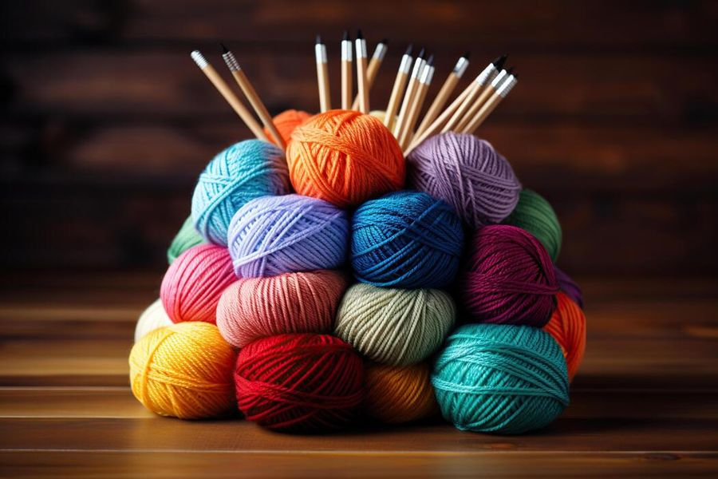

Yarn for every project
Welcome to Into Yarn, a Pretoria yarn and craft shop for knitters, crocheters and craft lovers. Find quality, affordable yarn, friendly guidance and a welcoming crafting community.
Checking opening hours…

What is yarn?
In everyday life, yarn is the material you use to make cosy items like sweaters, blankets and hats. It is the core material for crafts like knitting, crocheting, weaving and sewing.
Yarn can be made from many different sources:
- Animals: wool from sheep, mohair from goats, or silk from silkworms.
- Plants: cotton from cotton plants, linen from flax, or bamboo.
- Synthetics: man-made materials like acrylic, nylon or polyester.
Featured yarn
Photo gallery
Select any photo to view it larger. Use the arrow keys to move between photos and Esc to close.